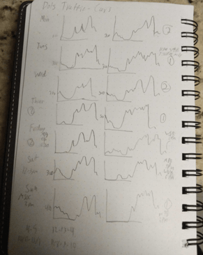

Home
Problem Overview
Approaches
Data Visuals
Findings
In order to better understand the data, we began by looking at the data points over time and location. This required some research along with adding geocoordinates for each sensor. We first plotted the data in an area chart over time to create an overview. Then we calculated mean traffic volumes by time and sensor to create an averaged overview. In order to get an animated visualization, we used Tableau to express the data in pages(or frames)
Later it we decided to tweak the time frames for the animation animation. The thought was this, looking for large darker circles at 15 minute intervals may intuitively indicate traffic congestion, but the sensors could not reliably account for vehicles until they passed. In fact, a larger darker circle at 15 minute intervals could be more indicative of a comfortable traffic flow and not traffic congestion.
During this process we also looked at the variance between events like a Saturday in which Maryland hosted a football game versus the next Saturday in which there was no football game. Another thing we attempted to gauge was the effects of class schedule on traffic volume.
Within the data visualizations we include 2 RMarkdown files. They contain work and descriptions related to our attempts at making models from the dataset. Before getting deep into modeling however, we hand-sketched some trends to get a basic idea of what to expect, seen here.
